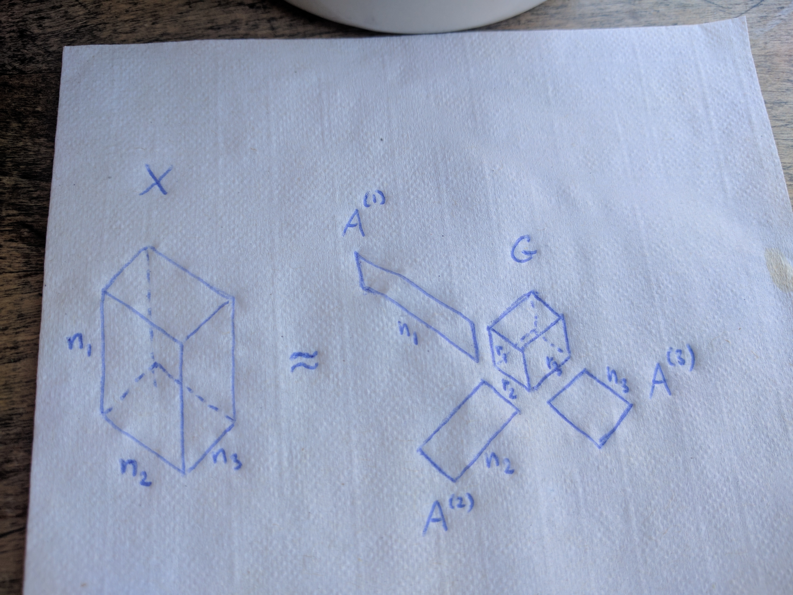
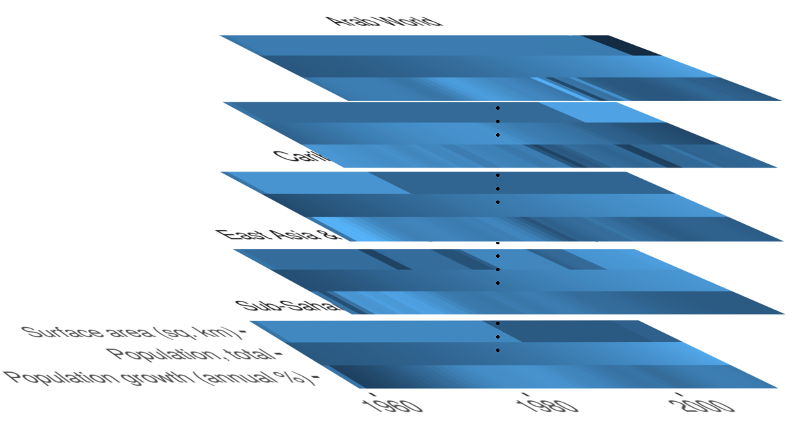

Understanding the Tucker decomposition, and compressing tensor-valued data (with R code)
In many applications, data naturally form an n-way tensor with n > 2, rather than a “tidy” table. As mentioned in the beginning of my last blog post, a tensor is essentially a multi-dimensional array:
- a tensor of order one is a vector, which simply is a column of numbers,
- a tensor of order two is a matrix, which is basically numbers arranged in a rectangle,
- a tensor of order three looks like numbers arranged in rectangular box (or a cube, if all modes have the same dimension),
- an nth order (or n-way) tensor looks like numbers arranged in an n-hyperrectangle… you get the idea…
In this post I introduce the Tucker decomposition (Tucker (1966) “Some mathematical notes on three-mode factor analysis”). The Tucker decomposition family includes methods such as
- the higher-order SVD, or HOSVD, which is a generalization of the matrix SVD to tensors (De Lathauwer, De Moor, and Vanderwalle (2000) “A multilinear singular value decomposition”),
- the higher order orthogonal iteration, or HOOI, which delivers the best approximation to a given tensor by another tensor with prescribed mode-1 rank, mode-2 rank, etc. (De Lathauwer, De Moor, and Vanderwalle (2000) “On the Best Rank-1 and Rank-(R1,R2,…,RN) Approximation of Higher-Order Tensors”).
I introduce both approaches, and in order to demonstrate the usefulness of these concepts, I present a simple data compression example using The World Bank’s World Development Indicators dataset (though I use the version available on Kaggle).
However, before we can get started with the decompositions, we need to look at and understand the k-mode tensor product.
Throughout this post, I will also introduce the R functions from the package rTensor, which can be used to perform all of the presented computations.
Tensor times matrix: the k-mode product
The $k$-mode product of a tensor $X \in \mathbb{R}^{I\subscript{1} \times I\subscript{2} \times \ldots \times I\subscript{N}}$ with a matrix $A \in \mathbb{R}^{J \times I\subscript{k}}$ is written as
The resulting tensor $Y$ is of size $I\subscript{1} \times \ldots \times I\subscript{k-1} \times J \times I\subscript{k+1} \times \ldots \times I\subscript{N}$, and contains the elements
It can be hard, at first, to understand what that definition really means, or to visualize it in your mind. I find that it becomes easier once you realize that the k-mode product amounts to multiplying each mode-k fiber of $X$ by the matrix $A$.
We can demonstrate that in R:
library(rTensor)
tnsr <- as.tensor(array(1:12, dim = c(2, 2, 3)))
mat <- matrix(1:6, 3, 2)
# 1-mode product performed via the function ttm in rTensor
tnsr_times_mat <- ttm(tnsr = tnsr, mat = mat, m = 1)
Now, for example, the first slice of tnsr_times_mat is the same as the matrix product of mat with the first slice of tnsr:
tnsr_times_mat@data[ , , 1]
# [,1] [,2]
# [1,] 9 19
# [2,] 12 26
# [3,] 15 33
mat %*% as.matrix(tnsr@data[ , , 1])
# [,1] [,2]
# [1,] 9 19
# [2,] 12 26
# [3,] 15 33
You might want to play around some more with the function ttm in R to get a better understanding of the k-mode product.
A few important facts about the k-mode product:
- $X \times\subscript{m} A \times\subscript{n} B = X \times\subscript{n} B \times\subscript{m} A$ if $n \neq m$,
- but $X \times\subscript{n} A \times\subscript{n} B = X \times\subscript{n} (BA)$ (in general $\neq X \times\subscript{n} B \times\subscript{n} A$).
Tucker decomposition
The Tucker decomposition (Tucker (1966)) decomposes a tensor into a core tensor multiplied by a matrix along each mode (i.e., transformed via a $k$-mode product for every $k = 1, 2, \ldots, N$):
Note that $G$ might be much smaller than the original tensor $X$ if we accept an approximation instead of an exact equality.
In case of three-way tensors, we can hold on to the following mental image:

It is interesting to note that the CP decomposition, that I introduced in a previous blog post, is a special case of the Tucker decomposition, where the core tensor $G$ is constrained to be superdiagonal.
Higher-order SVD (HOSVD)
So, how do you compute the Tucker decomposition?
Many algorithms rely on the following fundamental equivalence:
The above equation uses some notation that was not introduced yet:
- $\otimes$ denotes the Kronecker product.
-
$X\subscript{(k)}$ is the mode-$k$ unfolding (or mode-$k$ matricization) of the tensor $X$. The mode-$k$ unfolding arranges the mode-$k$ fibers (a fiber is a generalization of column to tensors) of $X$ as columns into a matrix. The concept may be easiest to understand by looking at an example. The following R code shows a 3-way tensor and all three of its mode-$k$ unfoldings (using the
k_unfoldfunction from therTensorpackage):tnsr <- as.tensor(array(1:12, dim = c(2, 3, 2))) tnsr@data # , , 1 # # [,1] [,2] [,3] # [1,] 1 3 5 # [2,] 2 4 6 # # , , 2 # # [,1] [,2] [,3] # [1,] 7 9 11 # [2,] 8 10 12 # mode-1 unfolding: k_unfold(tnsr, 1)@data # [,1] [,2] [,3] [,4] [,5] [,6] # [1,] 1 3 5 7 9 11 # [2,] 2 4 6 8 10 12 # mode-2 unfolding: k_unfold(tnsr, 2)@data # [,1] [,2] [,3] [,4] # [1,] 1 2 7 8 # [2,] 3 4 9 10 # [3,] 5 6 11 12 # mode-3 unfolding: k_unfold(tnsr, 3)@data # [,1] [,2] [,3] [,4] [,5] [,6] # [1,] 1 2 3 4 5 6 # [2,] 7 8 9 10 11 12
A straightforward approach to solve the Tucker decomposition would be to solve each mode-$k$ matricized form of the Tucker decomposition (shown in the equivalence above) for $A^{(k)}$. This approach is known as higher order SVD, or HOSVD. It can be regarded as a generalization of the matrix SVD, because the matrices $A^{(k)}$ are orthogonal, while the tensor $G$ is “ordered” and “all-orthogonal” (see De Lathauwer et. al. (2000) for detail). The resulting algorithm is shown below.
In R we can perform HOSVD using the function hosvd from rTensor:
tnsr <- rand_tensor(modes = c(30, 40, 50))
hosv_decomp <- hosvd(tnsr)
Now hosv_decomp$Z is our matrix $G$, and hosv_decomp$U is a list containing all the matrices $A^{(k)}$. We can use the function ttl, which performs multiple k-mode products on multiple modes successively given a tensor and a list of matrices, to check that up to numerical error the equation
$X = G \times\subscript{1} A^{(1)} \times\subscript{2} A^{(2)} \times\subscript{3} \ldots \times\subscript{N} A^{(N)}$
is satisfied:
HOSVD_prod <- ttl(hosv_decomp$Z, hosv_decomp$U, 1:3)
error <- tnsr - HOSVD_prod
table(abs(error@data) < 1e-12)
#
# TRUE
# 60000
Higher order orthogonal iteration (HOOI)
Note that we can also use HOSVD to compress $X$ by truncating the matrices $A^{(k)}$. The truncated HOSVD, however, is known to not give the best fit, as measured by the norm of the difference
The higher order orthogonal iteration, or HOOI, algorithm finds the optimal approximation $\widehat{X}$ (with respect to the Frobenius norm loss) by, essentially, iterating the alternating truncation and SVD until convergence. If we truncate $A^{(k)}$ to have $r\subscript{k}$ columns, then the HOOI solution can be obtained by the following algorithm.
Application of HOOI to data compression
The example considered below is somewhat silly, given that the tensor I’m compressing isn’t very big, and thus there isn’t much of a point in compressing it. However, I think that the example still shows off very well how the algorithm can be very useful when the data size is much bigger (or the available storage much smaller).
I have downloaded from Kaggle the World Development Indicators dataset, originally collected and published by The World Bank (the original dataset is available here).
The data can be arranged into a three-way tensor with the three modes corresponding to country (list of available countries), indicator (list of available indicators), and year (1960-2014). Since I didn’t have any time to deal with NA values in any creative way, I have kept only three indicators in the dataset. And I have replaced the remaining NAs with a country-wise average value for each particular indicator. Also, I have forgotten to normalize the data  . The preprocessing resulted in a tensor of size 247-countries-by-3-indicators-by-55-years, that looks sort of like this:
. The preprocessing resulted in a tensor of size 247-countries-by-3-indicators-by-55-years, that looks sort of like this:

In particular, large stretches of the data within a given country tend to be nearly constant, or nearly piece-wise constant.
We use the function tucker from rTensor to obtain a Tucker decomposition via HOOI, where we set the ranks to the value 3 at each mode.
dim(wdi_tnsr)
# [1] 247 3 55
tucker_decomp <- tucker(wdi_tnsr, ranks = c(3, 3, 3))
str(tucker_decomp)
# List of 7
# $ Z :Formal class 'Tensor' [package "rTensor"] with 3 slots
# .. ..@ num_modes: int 3
# .. ..@ modes : int [1:3] 3 3 3
# .. ..@ data : num [1:3, 1:3, 1:3] -6.60e+10 -1.13e+05 6.24e+05 -7.76e+05 -1.93e+08 ...
# $ U :List of 3
# ..$ : num [1:247, 1:3] -0.02577 -0.00065 -0.01146 -0.19637 -0.17317 ...
# ..$ : num [1:3, 1:3] -1.00 -6.97e-10 -2.08e-02 2.08e-02 -4.70e-08 ...
# ..$ : num [1:55, 1:3] -0.0762 -0.0772 -0.0785 -0.0802 -0.082 ...
# $ conv : logi TRUE
# $ est :Formal class 'Tensor' [package "rTensor"] with 3 slots
# .. ..@ num_modes: int 3
# .. ..@ modes : int [1:3] 247 3 55
# .. ..@ data : num [1:247, 1:3, 1:55] 9.83e+07 4.44e+06 8.81e+07 1.05e+09 8.97e+08 ...
# $ norm_percent: num 99.4
# $ fnorm_resid : num 3.9e+08
# $ all_resids : num [1:2] 3.9e+08 3.9e+08
# NULL
To see how well the tensor decomposition approximates the original tensor, we can look at the relative error
wdi_tnsr_approx <- ttl(tucker_decomp$Z, tucker_decomp$U, 1:3)
fnorm(wdi_tnsr - wdi_tnsr_approx) / fnorm(wdi_tnsr)
# [1] 0.005908934
and at the percentage of the norm of the original tensor explained by the Tucker decomposition
tucker_decomp$norm_percent
# [1] 99.40911
We, observe that we indeed achieve a recovery with an accuracy of over 99%. For comparison, the original tensor contains 247 * 3 * 55 = 40755 entries, while the computed Tucker decomposition consists of only 127 * 3 + 3 * 3 + 55 * 3 + 3 * 3 * 3 = 582 numbers. That’s a reduction in size by a factor greater than 70.
Even though data compression does not make much sense for the size of the dataset considered here, it clearly shows potential to be very useful for purposes of data distribution and data storage, when the data size far exceeds the terabyte range.